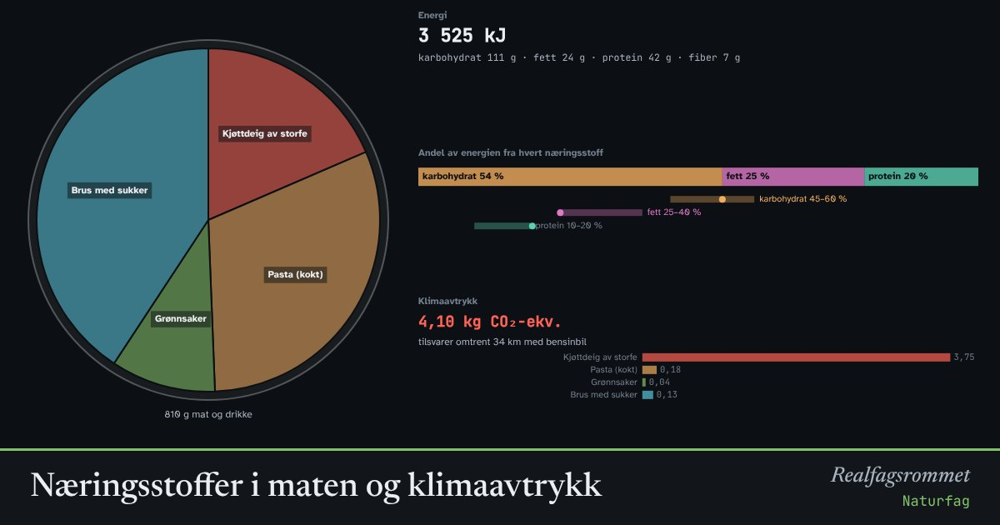

Næringsstoffer i maten og klimaavtrykk
Maten gir oss energi og byggesteiner. Karbohydrater, fett og proteiner har ulike oppgaver i kroppen. Ulike matvarer gir også svært ulikt klimaavtrykk. Sett sammen et måltid og se hva det inneholder.
Start animasjonen
Formler
Om animasjonen
Karbohydrater er kroppens viktigste energikilde. Fiber er karbohydrater vi ikke fordøyer, men som er viktige for tarmen. Fett gir mest energi per gram og trengs for å ta opp noen vitaminer. Proteiner er byggesteiner for muskler, enzymer og hormoner.
Helsedirektoratet anbefaler at omtrent 45–60 % av energien kommer fra karbohydrater, 25–40 % fra fett og 10–20 % fra protein, regnet over flere dager. Ett enkelt måltid trenger ikke treffe dette. Et variert kosthold gir også vitaminer og mineraler, som ikke er med her.
Klimaavtrykket måles i kilo CO₂-ekvivalenter. Kjøtt fra drøvtyggere som ku og sau gir mest, fordi dyrene slipper ut metan og trenger mye fôr. Belgfrukter og korn gir lite.
Tallene er omtrentlige gjennomsnittsverdier. Matvaretabellen.no har nøyaktige tall for norske matvarer.
Prøv dette
- Sammenlign kjøttdeig og pasta med bønnegryte. Hvor mye lavere blir klimaavtrykket?
- Hvilket næringsstoff gir mest energi per gram?
- Hvorfor er fiber viktig selv om det nesten ikke gir energi?
- Lag et måltid du liker som er innenfor anbefalt fordeling, og som har lavt klimaavtrykk.
Kompetansemål
- Naturfag: Næringsstoffer og et variert kosthold